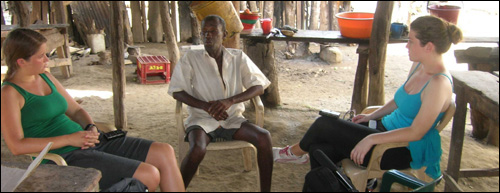

Pennsylvania State University - Lipski group

Name of PI: Dr. John Lipski
Current Projects:
The acquisition of the Palenquero creole language by native speakers of Spanish: going from greater to lesser morphological complexity in cognate languages.
Spanish-Portuguese mixing in vernacular speech along the Brazilian border with Spanish-speaking nations. The highly cognate languages combine in fashions that defy most theories of language mixing, and often involve involuntary mixing that occasionally coalesces into stable contact varieties.
Spanish-Quechua contact phenomena, studied in highland Ecuador. Spanish is acquired past adolescence by rural Quechua speakers, who have no formal education in any language and who "recycle" Quechua-influenced Spanish interlanguage within their communities. This environment differs from more usual life-long learning studies of second language acquisition, since these speakers are not immersed in a speech community where Spanish is spoken natively.

Center for Language Science
Pennsylvania State University
2M Thomas Building
University Park, PA 16802
For more details, please click here